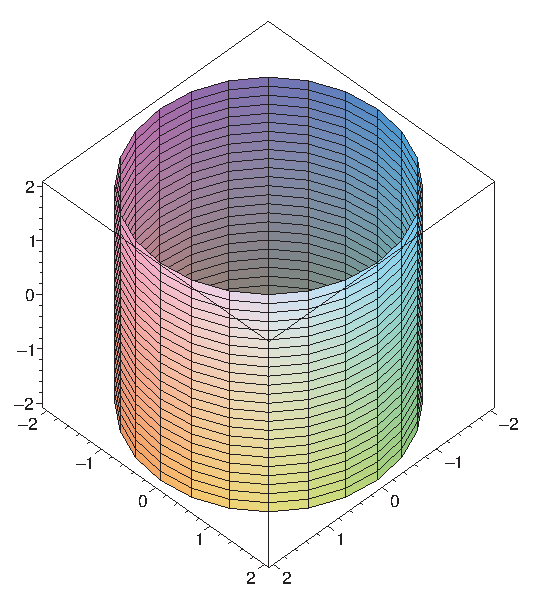

Coordinate systems are tools that let us use algebraic methods to understand geometry. While the rectangular (also called Cartesian) coordinates that we have been discussing are the most common, some problems are easier to analyze in alternate coordinate systems.
A coordinate system is a scheme that allows us to identify any point in the plane or in three-dimensional space by a set of numbers. In rectangular coordinates these numbers are interpreted, roughly speaking, as the lengths of the sides of a rectangular "box.''
In two dimensions you may already be familiar with an alternative, called polar coordinates. In this system, each point in the plane is identified by a pair of numbers $(r,\theta)$. The number $\theta$ measures the angle between the positive $x$-axis and a vector with tail at the origin and head at the point, as shown in figure 12.6.1; the number $r$ measures the distance from the origin to the point. Either of these may be negative; a negative $\theta$ indicates the angle is measured clockwise from the positive $x$-axis instead of counter-clockwise, and a negative $r$ indicates the point at distance $|r|$ in the opposite of the direction given by $\theta$. Figure 12.6.1 also shows the point with rectangular coordinates $\ds (1,\sqrt3)$ and polar coordinates $(2,\pi/3)$, 2 units from the origin and $\pi/3$ radians from the positive $x$-axis.
We can extend polar coordinates to three dimensions simply by adding a $z$ coordinate; this is called cylindrical coordinates . Each point in three-dimensional space is represented by three coordinates $(r,\theta,z)$ in the obvious way: this point is $z$ units above or below the point $(r,\theta)$ in the $x$-$y$ plane, as shown in figure 12.6.2. The point with rectangular coordinates $\ds (1,\sqrt3, 3)$ and cylindrical coordinates $(2,\pi/3,3)$ is also indicated in figure 12.6.2.
Some figures with relatively complicated equations in rectangular coordinates will be represented by simpler equations in cylindrical coordinates. For example, the cylinder in figure 12.6.3 has equation $\ds x^2+y^2=4$ in rectangular coordinates, but equation $r=2$ in cylindrical coordinates.
|  |
Given a point $(r,\theta)$ in polar coordinates, it is easy to see (as in figure 12.6.1) that the rectangular coordinates of the same point are $(r\cos\theta,r\sin\theta)$, and so the point $(r,\theta,z)$ in cylindrical coordinates is $(r\cos\theta,r\sin\theta,z)$ in rectangular coordinates. This means it is usually easy to convert any equation from rectangular to cylindrical coordinates: simply substitute $$\eqalign{ x&=r\cos\theta\cr y&=r\sin\theta\cr} $$ and leave $z$ alone. For example, starting with $\ds x^2+y^2=4$ and substituting $x=r\cos\theta$, $y=r\sin\theta$ gives $$\eqalign{ r^2\cos^2\theta+r^2\sin^2\theta&=4\cr r^2(\cos^2\theta+\sin^2\theta)&=4\cr r^2&=4\cr r&=2.\cr }$$ Of course, it's easy to see directly that this defines a cylinder as mentioned above.
Cylindrical coordinates are an obvious extension of polar coordinates to three dimensions, but the use of the $z$ coordinate means they are not as closely analogous to polar coordinates as another standard coordinate system. In polar coordinates, we identify a point by a direction and distance from the origin; in three dimensions we can do the same thing, in a variety of ways. The question is: how do we represent a direction? One way is to give the angle of rotation, $\theta$, from the positive $x$ axis, just as in cylindrical coordinates, and also an angle of rotation, $\phi$, from the positive $z$ axis. Roughly speaking, $\theta$ is like longitude and $\phi$ is like latitude. (Earth longitude is measured as a positive or negative angle from the prime meridian, and is always between 0 and 180 degrees, east or west; $\theta$ can be any positive or negative angle, and we use radians except in informal circumstances. Earth latitude is measured north or south from the equator; $\phi$ is measured from the north pole down.) This system is called spherical coordinates ; the coordinates are listed in the order $(\rho,\theta,\phi)$, where $\rho$ is the distance from the origin, and like $r$ in cylindrical coordinates it may be negative. The general case and an example are pictured in figure 12.6.4; the length marked $r$ is the $r$ of cylindrical coordinates.
As with cylindrical coordinates, we can easily convert equations in rectangular coordinates to the equivalent in spherical coordinates, though it is a bit more difficult to discover the proper substitutions. Figure 12.6.5 shows the typical point in spherical coordinates from figure 12.6.4, viewed now so that the arrow marked $r$ in the original graph appears as the horizontal "axis'' in the left hand graph. From this diagram it is easy to see that the $z$ coordinate is $\rho\cos\phi$, and that $r=\rho\sin\phi$, as shown. Thus, in converting from rectangular to spherical coordinates we will replace $z$ by $\rho\cos\phi$. To see the substitutions for $x$ and $y$ we now view the same point from above, as shown in the right hand graph. The hypotenuse of the triangle in the right hand graph is $r=\rho\sin\phi$, so the sides of the triangle, as shown, are $x=r\cos\theta=\rho\sin\phi\cos\theta$ and $y=r\sin\theta=\rho\sin\phi\sin\theta$. So the upshot is that to convert from rectangular to spherical coordinates, we make these substitutions: $$\eqalign{ x&=\rho\sin\phi\cos\theta\cr y&=\rho\sin\phi\sin\theta\cr z&=\rho\cos\phi.\cr} $$
Example 12.6.1 As the cylinder had a simple equation in cylindrical coordinates, so does the sphere in spherical coordinates: $\rho=2$ is the sphere of radius 2. If we start with the Cartesian equation of the sphere and substitute, we get the spherical equation: $$\eqalign{ x^2+y^2+z^2&=2^2\cr \rho^2\sin^2\phi\cos^2\theta+ \rho^2\sin^2\phi\sin^2\theta+\rho^2\cos^2\phi&=2^2\cr \rho^2\sin^2\phi(\cos^2\theta+\sin^2\theta)+\rho^2\cos^2\phi&=2^2\cr \rho^2\sin^2\phi+\rho^2\cos^2\phi&=2^2\cr \rho^2(\sin^2\phi+\cos^2\phi)&=2^2\cr \rho^2&=2^2\cr \rho&=2\cr }$$
Example 12.6.2 Find an equation for the cylinder $\ds x^2+y^2=4$ in spherical coordinates.
Proceeding as in the previous example: $$\eqalign{ x^2+y^2&=4\cr \rho^2\sin^2\phi\cos^2\theta+ \rho^2\sin^2\phi\sin^2\theta=4\cr \rho^2\sin^2\phi(\cos^2\theta+\sin^2\theta)&=4\cr \rho^2\sin^2\phi&=4\cr \rho\sin\phi&=2\cr \rho&={2\over\sin\phi}\cr }$$
Exercises 12.6
Ex 12.6.1 Convert the following points in rectangular coordinates to cylindrical and spherical coordinates:
a. $(1,1,1)$
b. $(7,-7,5)$
c. $(\cos(1),\sin(1),1)$
d. $(0,0,-\pi)$ (answer)
Ex 12.6.2 Find an equation for the sphere $\ds x^2+y^2+z^2=4$ in cylindrical coordinates. (answer)
Ex 12.6.3 Find an equation for the $y$-$z$ plane in cylindrical coordinates. (answer)
Ex 12.6.4 Find an equation equivalent to $\ds x^2+y^2+2z^2+2z-5=0$ in cylindrical coordinates. (answer)
Ex 12.6.5 Suppose the curve $\ds \ds z=e^{-x^2}$ in the $x$-$z$ plane is rotated around the $z$ axis. Find an equation for the resulting surface in cylindrical coordinates. (answer)
Ex 12.6.6 Suppose the curve $\ds z=x$ in the $x$-$z$ plane is rotated around the $z$ axis. Find an equation for the resulting surface in cylindrical coordinates. (answer)
Ex 12.6.7 Find an equation for the plane $y=0$ in spherical coordinates. (answer)
Ex 12.6.8 Find an equation for the plane $z=1$ in spherical coordinates. (answer)
Ex 12.6.9 Find an equation for the sphere with radius 1 and center at $(0,1,0)$ in spherical coordinates. (answer)
Ex 12.6.10 Find an equation for the cylinder $\ds x^2+y^2=9$ in spherical coordinates. (answer)
Ex 12.6.11 Suppose the curve $\ds z=x$ in the $x$-$z$ plane is rotated around the $z$ axis. Find an equation for the resulting surface in spherical coordinates. (answer)
Ex 12.6.12 Plot the polar equations $r=\sin(\theta)$ and $r=\cos(\theta)$ and comment on their similarities. (If you get stuck on how to plot these, you can multiply both sides of each equation by $r$ and convert back to rectangular coordinates).
Ex 12.6.13 Extend exercises 6 and 11 by rotating the curve $z=mx$ around the $z$ axis and converting to both cylindrical and spherical coordinates. (answer)
Ex 12.6.14 Convert the spherical formula $\rho=\sin \theta \sin \phi$ to rectangular coordinates and describe the surface defined by the formula (Hint: Multiply both sides by $\rho$.) (answer)
Ex 12.6.15 We can describe points in the first octant by $x >0$, $y>0$ and $z>0$. Give similar inequalities for the first octant in cylindrical and spherical coordinates. (answer)